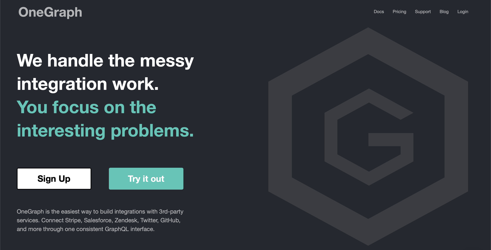

Supercharging JAMstack apps with multiple APIs
And introducing "GraphQL Pipelines"
Who am I?
- Sean Grove (@sgrove)
- Cofounder of (@OneGraphIO)
- VP Eng @ Payments company
- Background in Clojure(Script)/Reason/Rust, dev-tooling
More importantly…
I'm a smart guy.
Like, really, raelly smart.


And I have some grat ideas.
How do the ideas come to me?
Indescribable process…

And I'm not alone!
All of us have great ideas!
So many great ideas start as side-projects:
- ProductHunt
- Groupon
- Oculus
- literally some others…
Case study
Inspiration strikes:
Matcha is hot. It's everywhere.
Scooters are hot. They're everywhere.
Hot thing + other hot thing = hottest thing?
Matcha. Scooters.
Matcha flavored scooters?
Matcha with your scooter?
No time for that!
Figure out the details later!
Before we can build our startup, we require…:
- Domain
- Decentralized, hosted source control
- Infinitely scalable site hosting
- Launch page
- Mailing list
- Payment processor
- Authentication / Authorization
- Continuous integration / deployment
- Institutional investors
What does our project need?
We live in a golden age of building real apps
There are services that do everything for us!
- Domain
- Decentralized, hosted source control
- Infinitely scalable site hosting
- Launch page
- Mailing list
- Payment processor
- Authentication / Authorization
- Continuous integration / deployment
- Institutional investors
But still, it's a lot
Setting up all these great tool…
Gluing everything together…
It still takes too much friction!
The world moves fast now,
we can't afford to take that much time!
But if you notice….
All these services have APIs.
New plan:
Put the case study on hold…
… and build a public tool
to automate everything.
Time to shave some yaks.

A startup pipeline
Let's focus on the first part post-idea:
- Create a GitHub repository
- Create a new Netlify site
- Buy a domain
- Deploy a placeholder page
- Start a viral social media campaign (i.e. tweet a link)
- Get PUMPED!
1. Source control: Create a GitHub Repository
GitHub API:
- Step 0: Google.
- Step 1:
POST https://api.github.com/users/{username}/repos -d
{
"name": "matchascoots",
"description": "Matcha Scooters is your one stop...",
"homepage": "https://matchascoots.com",
"private": false,
"has_issues": true,
"has_projects": true,
"has_wiki": true
}
curl -X POST https://api.github.com/users/sgrove/repos -d '{"name": "matchascoots"}'
{
"message": "Not Found",
"documentation_url": "https://developer.github.com/v3"
}
curl -X POST https://api.github.com/users/repos -d '{"name": "matchascoots"}'
{
"message": "Not Found",
"documentation_url": "https://developer.github.com/v3"
}
curl -X POST https://api.github.com/user/repos -d '{"name": "matchascoots"}'
{
"message": "Requires authentication",
"documentation_url": "https://developer.github.com/v3/repos/#create"
}
- … ?
- Step 1: Create a personal access token and use it in place of password
curl -X POST https://api.github.com/user/repos -d '{"name": "matchascoots"}' \
-u sgrove:<.... yeah right! ...>
{
"name": "matchascoots",
"url": "https://github.com/sgrove/matchascoots"
"id": "....",
...
}
Et voilà! Our masterpiece:
const createRepo = (name, token) =>
fetch("https://api.github.com/user/repos", {
method: "POST",
body: JSON.stringify({ name: name }),
headers: {
authorization: `Bearer ${token}`
}
});
- Create a GitHub repository
- Create a new Netlify site
- Buy a domain
- Deploy a placeholder page
- Start a viral social media campaign (i.e. tweet a link)
- Get PUMPED!
Create a GitHub repository- Create a new Netlify site
- Buy a domain
- Deploy a placeholder page
- Start a viral social media campaign (i.e. tweet a link)
- Get PUMPED!
2. Create a new site
All our favorite provider*:
Netlify!
- totally not contractually obligated to say that
curl -X POST https://api.netlify.com/api/v1/sites -H 'Content-Type: application/json' -d '{
"id": "...",
"state": "...",
"plan": "...",
"name": "...",
"custom_domain": "...",
"domain_aliases": [
"..."
],
"password": "...",
"notification_email": "...",
"url": "...",
"ssl_url": "...",
"admin_url": "...",
"screenshot_url": "...",
"created_at": "...",
"updated_at": "...",
"user_id": "...",
"session_id": "...",
"ssl": true,
"force_ssl": true,
"managed_dns": true,
"deploy_url": "...",
"published_deploy": {
"id": "...",
"site_id": "...",
"user_id": "...",
"build_id": "...",
"state": "...",
"name": "...",
"url": "...",
"ssl_url": "...",
"admin_url": "...",
"deploy_url": "...",
"deploy_ssl_url": "...",
"screenshot_url": "...",
"review_id": 0,
"draft": true,
"required": [
"..."
],
"required_functions": [
"..."
],
"error_message": "...",
"branch": "...",
"commit_ref": "...",
"commit_url": "...",
"skipped": true,
"created_at": "...",
"updated_at": "...",
"published_at": "...",
"title": "...",
"context": "...",
"locked": true,
"review_url": "...",
"site_capabilities": {
"large_media_enabled": true
}
},
"account_name": "...",
"account_slug": "...",
"git_provider": "...",
"deploy_hook": "...",
"capabilities": {
"property1": {},
"property2": {}
},
"processing_settings": {
"skip": true,
"css": {
"bundle": true,
"minify": true
},
"js": {
"bundle": true,
"minify": true
},
"images": {
"optimize": true
},
"html": {
"pretty_urls": true
}
},
"build_settings": {
"id": 0,
"provider": "...",
"deploy_key_id": "...",
"repo_path": "...",
"repo_branch": "...",
"dir": "...",
"cmd": "...",
"allowed_branches": [
"..."
],
"public_repo": true,
"private_logs": true,
"repo_url": "...",
"env": {
"property1": "...",
"property2": "..."
},
"installation_id": 0
},
"id_domain": "...",
"default_hooks_data": {
"access_token": "..."
},
"build_image": "...",
"repo": {
"id": 0,
"provider": "...",
"deploy_key_id": "...",
"repo_path": "...",
"repo_branch": "...",
"dir": "...",
"cmd": "...",
"allowed_branches": [
"..."
],
"public_repo": true,
"private_logs": true,
"repo_url": "...",
"env": {
"property1": "...",
"property2": "..."
},
"installation_id": 0
}
}'
* Connection state changed (MAX_CONCURRENT_STREAMS updated)!
* We are completely uploaded and fine # <--- I love this!
< HTTP/2 401
"Hello darkness, my old friend…"
Why is this so difficult?
GitHub and Netlify have great APIs!
In fact, they both have great APIs.
Like, furreal:
{
"message": "Requires authentication",
"documentation_url": "https://developer.github.com/v3/repos/#create"
}
"documentation_url"??
- Good design
- Good documentation
… Not every API will be so nice.
Fundamental problems:
- API design is very open, tools can't help
- Auth is hard
Remember, we want to expose our startup-generating pipeline somewhere for us to hit later, publicly!
We don't want to expose our GitHub token
and our Netlify token
and our other tokens…
So what can we do?
- Let's write some server-side functions
- That will call out to GitHub/Netlify
- And will know our auth tokens via ENV variables
Except, let's not.
We can overcome these issues with this, but…
- It's a lot of work.
- It doesn't help with the first problem of exploring.
Ok, new proposal:
let's solve these API problems, too.
For those keeping score…
Here's our challenge stack we just pushed onto:
- Matcha Scooters
- Set up startup infrastructure
- Automate settings up startup infrastructure
- Fix API explorability, docs, and auth
- Automate settings up startup infrastructure
- Set up startup infrastructure

We will get there.
… I think.
Fixing API explorability
Here's the plan:
- API must have a computer-readable spec from the beginning
- The spec must be complete and infallible
GraphQL!
- API must have a computer-readable spec from the beginning
- The spec must be complete and infallible
- Build lots of great open tools on top of that spec
[Spotify Demo]
Now, let's recreate our previous two functions with this new tooling!
boom.
Fixing API Auth
How do we solve the auth problem!?
Two benefits from this approach:
- Auth is captured securely in proxy
- API can be customized/molded to be a bit friendlier
Can we do the same thing for GraphQL?
Persisted queries.
[Persisted queries demo]
Let's pop the stack!
Fix API explorability, docs, and auth- Automate settings up startup infrastructure
- 1.
Create a GitHub repository - 1.
Create a new Netlify site - 1. Buy a domain
- 1. Deploy a placeholder page
- 1. Start a viral social media campaign (i.e. tweet a link)
- 1. Get PUMPED!
- 1.
- Set up startup infrastructure
- Matcha Scooters
Let's do this!
mutation CopyTemplateRepo($name: String!, $ownerId: String!) {
gitHub {
cloneTemplateRepository(
input: {
repositoryId: "MDEwOlJlcG9zaXRvcnkyMTU0MjUxNjY="
visibility: PUBLIC
ownerId: $ownerId
name: $name
}
) {
repository {
databaseId
id
nameWithLogin
}
}
}
}
mutation CreateNetlifyDeployKey {
netlify {
makeRestCall {
post(path: "/api/v1/deploy_keys") {
jsonBody
}
}
}
}
mutation AddDeployKeyToRepo($path: String!, $key: String!, $repoId: Int!) {
gitHub {
makeRestCall {
post(
path: $path # "/repos/dwwoelfel/netlify-test/keys"
jsonBody: {
id: $repoId
key: $key
title: "Netlify"
}
) {
jsonBody
}
}
}
}
mutation CreateNetlifySite($siteName: String!, $repo: String!, $cmd: String!, $deployKeyId: String!) {
netlify {
makeRestCall {
post(
path: "/api/v1/sites"
jsonBody: {
name: $siteName
repo: {
provider: "github"
id: 215425232
repo: $repo
private: false
branch: "master"
cmd: $cmd # "sed -i 's/{site-name}/Macha Scoot/g' index.html"
dir: "/"
deploy_key_id: $deployKeyId
}
}
) {
jsonBody
}
}
}
}
mutation DeployNetlifySite($path: String!) {
netlify {
makeRestCall {
post(
path: $path #"/api/v1/sites/8c47014f-7074-4afb-820c-758e1d105e76/deploys"
) {
jsonBody
}
}
}
}
https://startup-in-a-box.netlify.com/
One
Single
Endpoint
with all our auth, and operations.
Success?
Pop that stack!
Fix API explorability, docs, and authAutomate settings up startup infrastructure- 1.
Create a GitHub repository - 1.
Create a new Netlify site - 1.
Buy a domain - 1.
Deploy a placeholder page - 1.
Start a viral social media campaign (i.e. tweet a link) - 1.
Get PUMPED!
- 1.
- Set up startup infrastructure
- Matcha Scooters
But we're not quite ready yet, I think.
Inspiration strikes even when I'm not at my computer.
Competition is fierce.
But I always have my phone.
Final goal:
Trigger the pipeline with an incoming SMS from Twilio.
subscription TwilioSub($authToken: String!, $accountSid: String!, $inspirationalPhoneNumber: String!) {
twilio(
auth: { twilio: { authToken: $authToken, accountSid: $accountSid } }
webhookUrl: "https://startup-in-a-box.netlify.com/jamstack-what-an-amazing-demo-fn"
) {
incomingSMS(input: {
to: $inspirationalPhoneNumber
}) {
sms {
body
from
to
}
}
}
}
- Set up startup infrastructure
- Matcha Scooters
Win?
Win
Win
Win
Set up startup infrastructure- Matcha Scooters
What did we do?
- We made APIs easy (and fun!) to explore, experiment with
- We automated an ad-hoc GraphQL pipeline from start to finish
- Buys a domain
- Creates a GitHub repository
- Creates a Netlify site for the repository and domain
- Tweets out the new site
- Gets us stoked for the project with our JAM
- Extended the pipeline to be triggered by incoming SMS
- Actually purchased and deployed - live! - matchascoots.com
So what?
- This is a fun side project, but the principle is the same for our jobs
- Building time-efficient pipeline on:
- Salesforce
- Stripe
- Quickbooks
- Brex
- Slack
But we need to make exploring APIs fun [GraphQL] We need to make productionizing ideas fast [Pipelines]
Thank you!
- Sean Grove (@sgrove)
- Cofounder of (@OneGraphIO)

Misc
"All of us have ideas that come to us from time to time that we'd like to work on, but even though we live in a golden age, putting the pieces together is still super cumbersome." "I get dozens of good ideas per week! There's no way I can spend a bunch of time on each one. So either I have to start jettisoning my great ideas…. or, make each idea faster" "The secret to a good idea is to ride a wave. And I've seen matcha just about everywhere - Matcha is great, it's hot - so what can we do with that?" "Matcha scooters, obviously"
- End the talk by also playing some rap song at the end of the pipeline, "all I do is win win win"
"Yeah, moving bits around is cool, but changing the physical world is cooler. Like, sound waves." "It's functioning, but it lacks some… class. Some pizazz. "
Every JAMstack app at its core does 2 things for users:
- reads data from sources (DB, Stripe, Salesforce, Shopify, etc.)
- effects the world on their behalf (sending emails, submitting purchases, etc.)
Yet combining APIs into a coherent unit is intensely manual & fiddly. Instead, let's combine multiple persisted queries in GraphQL to succinctly encompass all of the chaining work. We'll build one such sequence to expose as a single call for our JAMstack app that:
- takes a domain-name input from a user
- purchases the domain
- creates a GitHub project
- deploys a placeholder on Netlify
mutation WinWinWin {
spotify {
playTrack(
input: {
trackIds: ["0RIHDrcRAXtUlnkvTYPW1a"]
positionMs: 69500
}
) {
player {
isPlaying
}
}
}
}
query MyQuery {
spotify {
search(data: { query: "all I do is win" }) {
tracks {
id
name
artists {
id
name
}
}
}
}
}
mutation WinWinWin {
spotify {
playTrack(
input: {
# Sean's desktop Spotify player
deviceId: "c7bdc7f723380d0da320927d5e681156599f6f84"
# win win win
trackIds: ["0RIHDrcRAXtUlnkvTYPW1a"]
positionMs: 69500
}
) {
player {
isPlaying
}
}
}
}